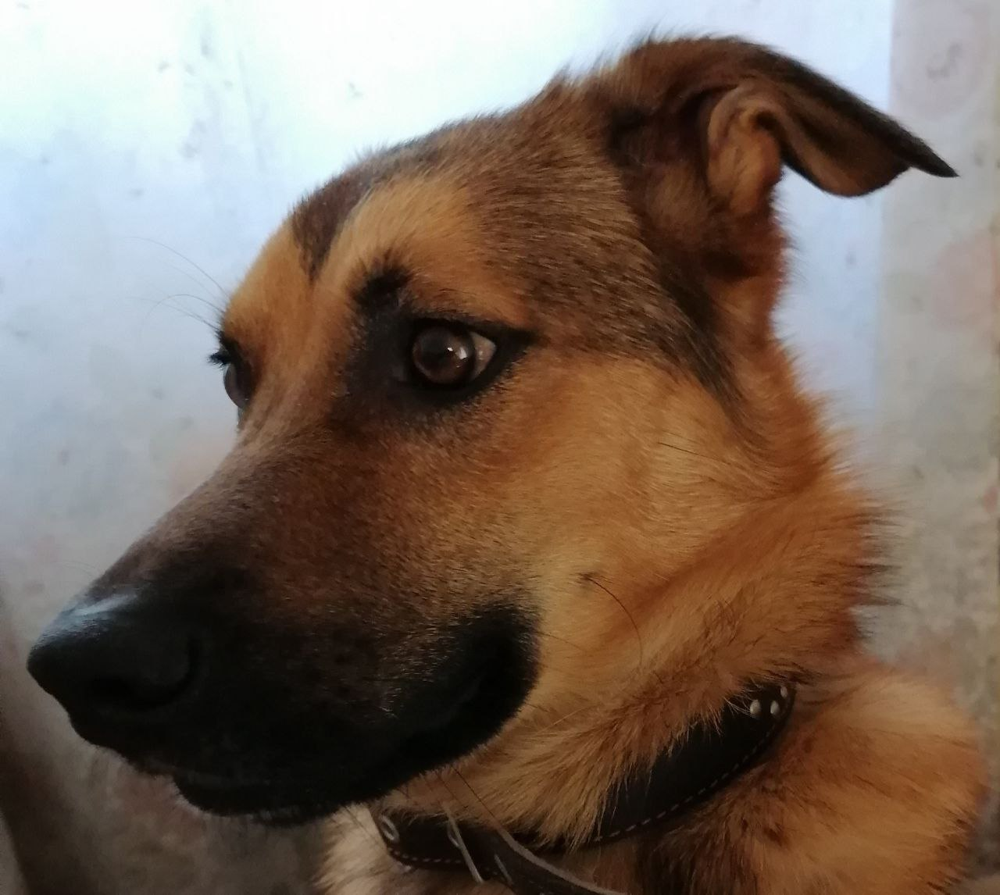

Прежние хозяева отказались от собаки. Брали щенком, чтобы ребенку было с кем поиграть. А теперь Фокс подрос и ребенок уже не справляется, не может удержать собаку, потому что с песиком только играли, а не учили правильному поведению. У взрослых не было желания заниматься собакой, ведь это же игрушка. Да и денег требует. Чувства собаки и собственного ребенка - не в счет. Решили просто отказаться от обузы.
И теперь этот песик в поисках новой семьи. Ему уже 1 год. Весит 20 кг, 50 см в холке. Он здоров, привит. Даже паспорт есть. Активный и дружелюбный, совершенно не агрессивный пес.Уважает собак больше себя по размеру и может стать хорошим компаньоном для них.
Команды "сидеть", "лежать" и "дай лапу" он знает. Не учили только командам "ко мне" и "рядом", потому что гуляли с ним только на поводке.
Фокс - милый друг, любящий женщин, уважающий мужчин и обожающий детей. Любовь, доброе отношение и забота это все что ему нужно.
Он жил в квартире, в туалет ходит на улице, ничего не грызет. Но идеально для него жить в собственном доме. Так хочется побегать всласть, поиграть со своим человеком и членами его семьи, показать наконец что и охранять он может не хуже других своих собратьев, было бы что охранять.....
Может нашему красавчику все таки наконец то повезет? Так хочется надеятся на это.... Ведь Фокс красив, умен, совершенно беспроблемный по характеру пёсель,он очень быстро привыкнет к новым людям, к новому месту обитания, к новым обстоятельствам, он же очень умен..... Присмотритесь к Фоксу, подарите ему свою дружбу на долгие годы, Фокс отблагодарит вас своей безграничной преданностью и любовью....
Территориально Фокс находится во Владимирской обл. Можем привезти в Москву, Московскую обл.
Если Вам понравился этот пес, звоните по тел. 8960-723-2494
